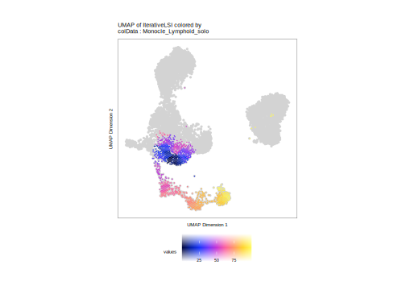

18.3 Monocle3 Trajectories
ArchR can also handle trajectories derived in Monocle3. This is handled by the getMonocleTrajectories() and addMonocleTrajectory() functions. Before diving in, it is worth noting that much of the infrastructure that ArchR uses for storing and visualizing trajectories is based on the assumption that the trajectory is linear and the trajectories determined by Monocle3 are not necessarily linear. Because of this, we either have to (i) force Monocle3 to create a linear trajectory by limiting the cell groups that it uses, or (ii) to treat the resulting Monocle3 trajectory as a collection of individual trajectories coming from a single cellular group. We illustrate these two workflows below.
Though this is slightly counter to the typical ArchR workflow, we first run getMonocleTrajectories() to retrieve the trajectory from Monocle3. In this function call, principalGroup indicates the apex group from which the trajectory will emanate and useGroups tells Monocle3 all of the groups that should be mapped on the trajectory.
First, we will create a linear trajectory of the lymphoid lineage. The same workflow would apply for the myeloid lineage but we are just going to create the lymphoid trajectory here to enable downstream comparison of ArchR, Monocle3, and Slingshot trajectories in a subsequent secion of this book.
monocle_lymphoid_solo <- getMonocleTrajectories(
ArchRProj = projHeme5,
name = "Monocle_Lymphoid_solo",
useGroups = c("Progenitor","CLP","PreB","B"),
principalGroup = "Progenitor",
groupBy = "Clusters2",
embedding = "UMAP",
clusterParams = list(k = 50),
seed = 1
)
## Running Monocole3 Trajectory Infrastructure!
## Adding Embedding
## Clustering Embedding
## Learning Graphs
## | | | 0% | |======================================================================| 100%
## Getting Principal Node
## Ordering Cells
## Plotting Results - /workspace/ArchR/ArchR_Website_Testing/bookdown/Save-ProjHeme4/Monocole3/Plot-Results-Monocle_Lymphoid_solo.pdfYou’ll notice that during the above function call, ArchR tells you that the trajectory results were plotted to a PDF called Monocole3/Plot-Results-Monocle_Lymphoid_solo.pdf which you can reference to see the trajectory results.
After we have retrieved this trajectory object from Monocle3 (called a “cell data set” or CDS), we need to add this information to our ArchRProject object. To do this, we use addMonocleTrajectory() and pass it the output of getMonocleTrajectories() to the monocleCDS parameter.
projHeme5 <- addMonocleTrajectory(
ArchRProj = projHeme5,
name = "Monocle_Lymphoid_solo",
useGroups = c("Progenitor","CLP","PreB","B"),
groupBy = "Clusters2",
monocleCDS = monocle_lymphoid_solo,
force = TRUE
)Now, we can use plotTrajectory() to plot as before. You’ll notice that we’ve set the parameter addArrow = FALSE because the fitted lines often look a little off for these non-ArchR trajectories.
p_lymphoid_solo <- plotTrajectory(projHeme5, trajectory = "Monocle_Lymphoid_solo", colorBy = "cellColData", name = "Monocle_Lymphoid_solo", addArrow = FALSE)
## ArchR logging to : ArchRLogs/ArchR-plotTrajectory-1a140888767-Date-2025-01-23_Time-23-06-28.428608.log
## If there is an issue, please report to github with logFile!
## Plotting
## Plotting Trajectory
## ArchR logging successful to : ArchRLogs/ArchR-plotTrajectory-1a140888767-Date-2025-01-23_Time-23-06-28.428608.log
p_lymphoid_solo[[1]]
## Warning: Removed 7715 rows containing non-finite outside the scale range
## (`stat_summary_hex()`).
Alternatively, we could create a single trajectory encompassing both the myeloid and lymphoid branches with a single call to getMonocleTrajectories(), providing all of the relevant groups to useGroups. For certain applications, this may be a useful implementation so it is worth thinking about the best way to do this for your particular biological question.
First, we create a new monocleCDS object using getMonocleTrajectories(), but passing the cell groups corresponding to both the lymphoid and myeloid cell types to useGroups.
monocle_progenitor <- getMonocleTrajectories(
ArchRProj = projHeme5,
name = "Monocle_Progenitor",
useGroups = c("Progenitor", "GMP","Mono","CLP","PreB","B"),
principalGroup = "Progenitor",
groupBy = "Clusters2",
embedding = "UMAP",
clusterParams = list(k = 50),
seed = 1
)
## Running Monocole3 Trajectory Infrastructure!
## Adding Embedding
## Clustering Embedding
## Learning Graphs
## | | | 0% | |======================================================================| 100%
## Getting Principal Node
## Ordering Cells
## Plotting Results - /workspace/ArchR/ArchR_Website_Testing/bookdown/Save-ProjHeme4/Monocole3/Plot-Results-Monocle_Progenitor.pdfAs mentioned above, the resulting Monocle trajectory contains multiple branches so we need to add each branch individually as its own trajectory. First, we will add the myeloid trajectory, by specifying the myeloid cell groupings to useGroups.
projHeme5 <- addMonocleTrajectory(
ArchRProj = projHeme5,
name = "Monocle_Myeloid",
useGroups = c("Progenitor","GMP","Mono"),
groupBy = "Clusters2",
monocleCDS = monocle_progenitor,
force = TRUE
)Plotting this trajectory is the same as above.
p_myeloid <- plotTrajectory(projHeme5, trajectory = "Monocle_Myeloid", colorBy = "cellColData", name = "Monocle_Myeloid", addArrow = FALSE)
## ArchR logging to : ArchRLogs/ArchR-plotTrajectory-1a12e8201d2-Date-2025-01-23_Time-23-07-02.007601.log
## If there is an issue, please report to github with logFile!
## Plotting
## Plotting Trajectory
## ArchR logging successful to : ArchRLogs/ArchR-plotTrajectory-1a12e8201d2-Date-2025-01-23_Time-23-07-02.007601.log
p_myeloid[[1]]
## Warning: Removed 4960 rows containing non-finite outside the scale range
## (`stat_summary_hex()`).Similarly, we can add the lymphoid trajectory.
projHeme5 <- addMonocleTrajectory(
ArchRProj = projHeme5,
name = "Monocle_Lymphoid",
useGroups = c("Progenitor","CLP","PreB","B"),
groupBy = "Clusters2",
monocleCDS = monocle_progenitor,
force = TRUE
)And then plot that lymphoid trajectory.
p_lymphoid <- plotTrajectory(projHeme5, trajectory = "Monocle_Lymphoid", colorBy = "cellColData", name = "Monocle_Lymphoid", addArrow = FALSE)
## ArchR logging to : ArchRLogs/ArchR-plotTrajectory-1a15e3f703-Date-2025-01-23_Time-23-07-04.417621.log
## If there is an issue, please report to github with logFile!
## Plotting
## Plotting Trajectory
## ArchR logging successful to : ArchRLogs/ArchR-plotTrajectory-1a15e3f703-Date-2025-01-23_Time-23-07-04.417621.log
p_lymphoid[[1]]
## Warning: Removed 7715 rows containing non-finite outside the scale range
## (`stat_summary_hex()`).If you look closely, you’ll notice slight differences between this lymphoid trajectory identified in isolation compared to the lymphoid branch of the larger joint monocle trajectory calculated at the beginning of this section. In particular, the “Progenitor” cells have a different pattern.